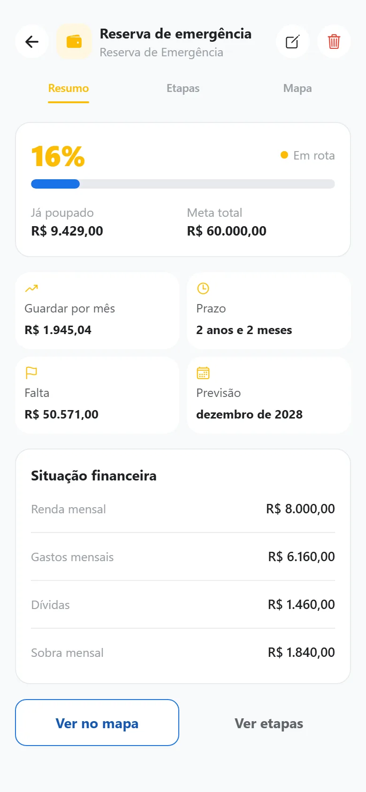
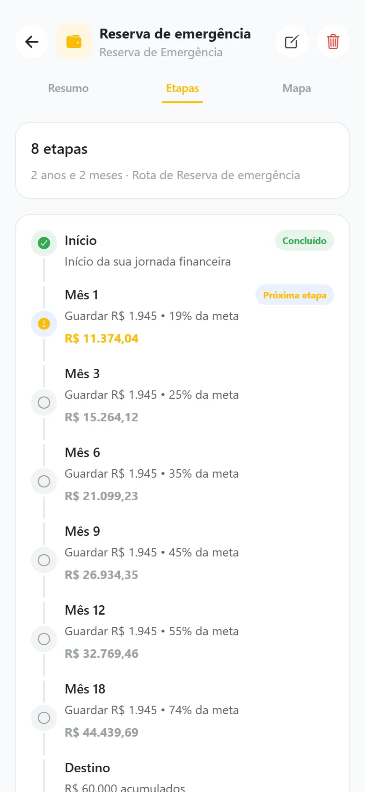
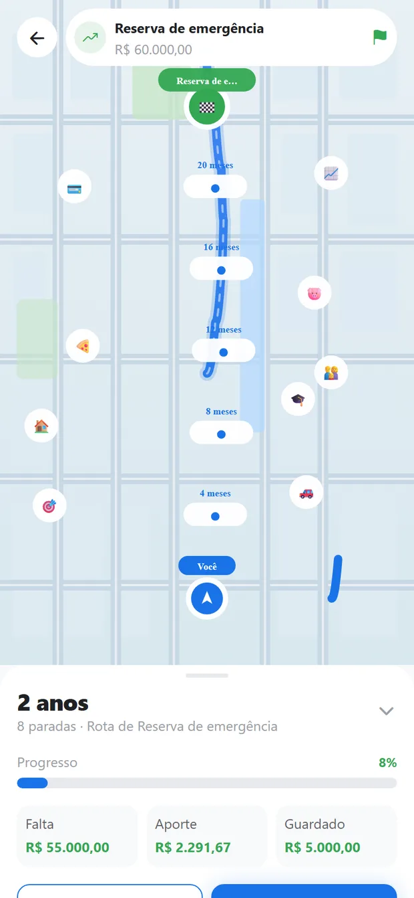
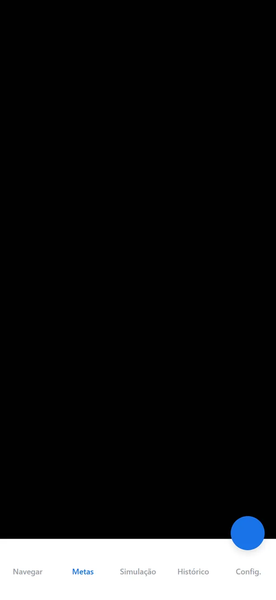
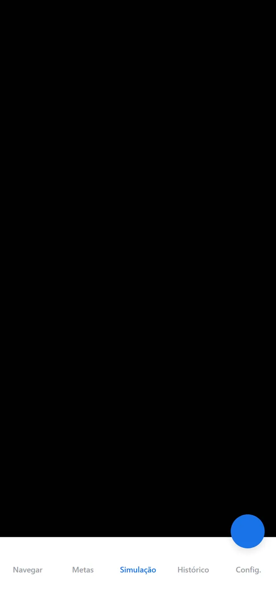
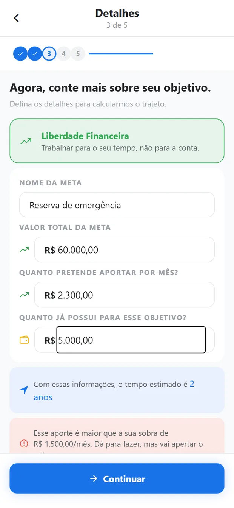
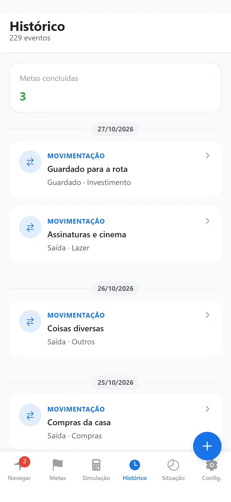
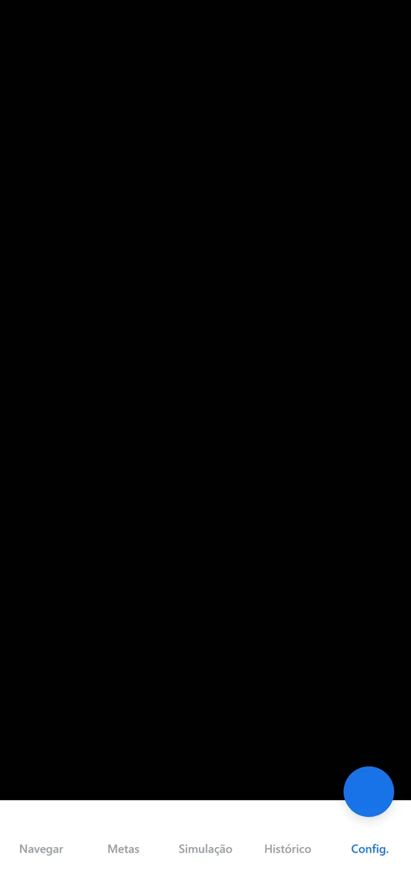

Clareza sem culpa
Um diagnóstico honesto do seu ponto de partida: o que sobra, o que falta e o que é lacuna — perguntada, nunca inventada.
Seu dinheiro deixa de ser uma lista de receitas e despesas e vira um fluxo com rotas. O Pilo lê seus dados e calcula os caminhos operacionais que o dinheiro deve percorrer: o que vai para a reserva, o que cobre as contas do mês e o que faz o objetivo avançar — com prazo, esforço e recalculado quando a vida acontece.
Transforma o dinheiro em um fluxo com rotas: em vez de apenas registrar receitas e despesas passadas, o Pilo calcula as rotas e os caminhos operacionais que o dinheiro deve percorrer. Quatro compromissos que guiam cada tela.
Um diagnóstico honesto do seu ponto de partida: o que sobra, o que falta e o que é lacuna — perguntada, nunca inventada.
Você cria a sua rota em 5 passos, com prazo e aporte. As rotas A, B e C continuam lá para quem prefere comparar três cenários inteiros.
Comprou algo fora do plano ou a renda mudou? O app mede o impacto e recalcula na sua frente, comparando rota planejada × vida real.
Seus dados ficam no aparelho — metas, lançamentos e documentos. A conta serve só para o plano e para o limite; trocar de conta não leva seu histórico junto. Nuvem só se você ativar.
Seis abas que contam a história inteira, do destino até o histórico.
Objetivo, situação atual, detalhes, prazo e revisão. A etapa 2 já abre com os seus números — e a rota é criada no fim, com a meta salva de verdade.
Tocar na rota ativa abre o detalhe: o resumo com aporte e prazo, as etapas do caminho e o mapa. O ícone de mapa abre o trajeto em tela cheia.
Se no ritmo atual você chega depois do prazo, o app avisa na tela em vez de mostrar a data limite como se fosse a chegada.
Reserva, viagem, troca de carro: cada meta com quanto falta e quanto tempo resta. A lupa do mapa troca a rota em tela.
E se eu guardar mais por mês? O controle deslizante mostra falta, tempo e progresso, e compara quatro cenários de uma vez.
Lance à mão ou importe PDF, CSV, XLSX e DOCX — extrato e fatura de cartão são entendidos, com revisão antes de confirmar.
Vencimentos e eventos do mês em uma grade, com a próxima conta sempre à mão na Home.
Contratos e comprovantes categorizados, com busca e leitura de imagem no navegador (OCR).
Prints reais do aplicativo, com valores de exemplo — no app, tudo vem dos seus dados.








Sem planilha, sem jargão, e você vê o quanto gasta usando.
Liberdade financeira, quitar dívidas, comprar um imóvel. É por aqui que o caminho começa.
Renda, gastos, dívidas e quanto já existe guardado. O app mostra a sobra enquanto você digita.
Valor alvo, quanto pretende guardar por mês e quanto já tem. A etapa avisa se o aporte não couber no mês.
Ou deixe o app calcular pelo seu aporte. Com prazo fixo, ele mostra quanto por mês seria preciso.
Revise, crie a rota e caia direto nas Metas. O mapa, as etapas e o prazo já estão prontos.
O Pilo é local-first: tudo fica salvo no seu aparelho e o app funciona offline. Nada de rastreadores ou vendas de dados. Se quiser usar em dois aparelhos, ative a sincronização — ela é opcional, explícita e nunca decide conflitos em silêncio.
É grátis para sempre no plano Free, não pede cartão e a conta só libera o plano.
Leve com você